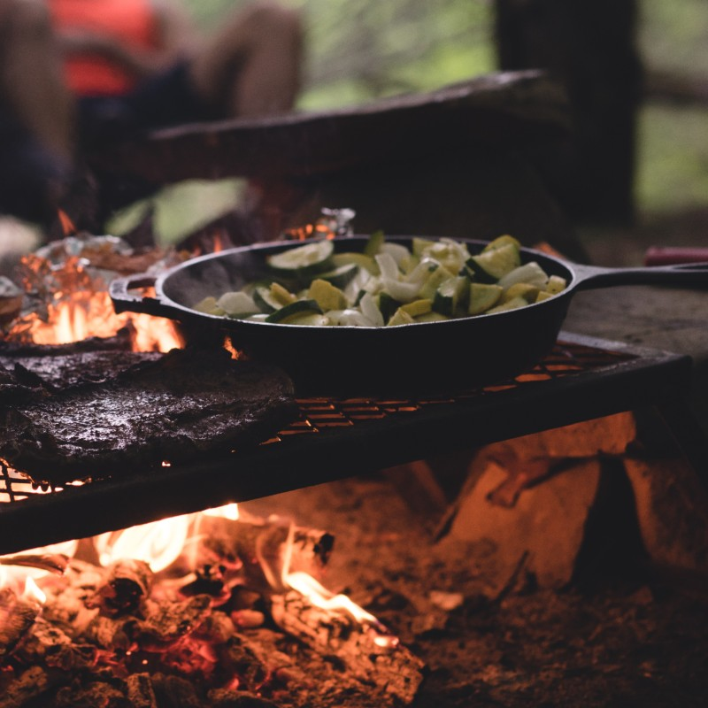
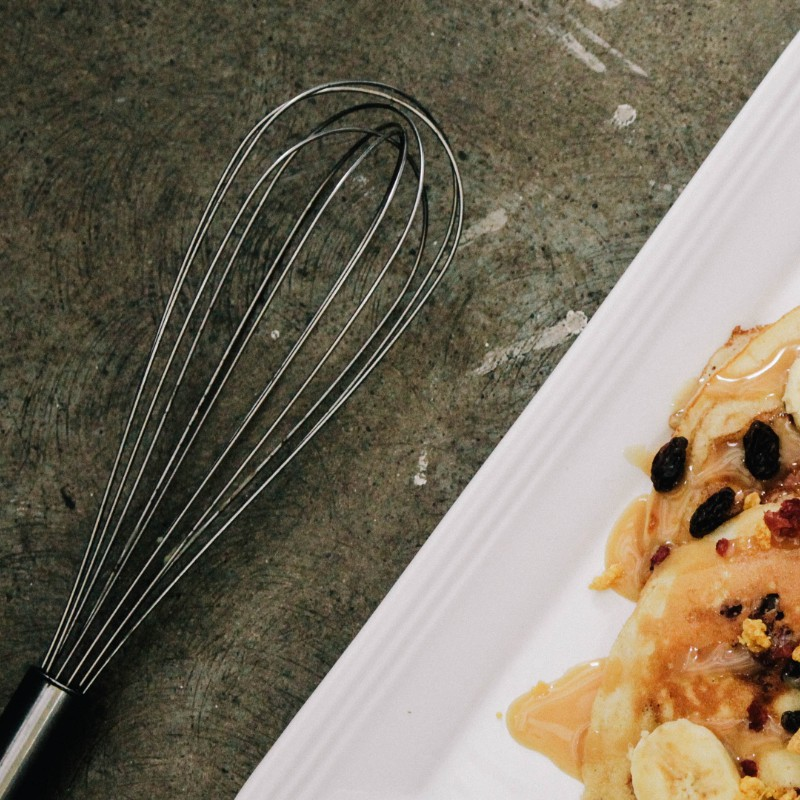
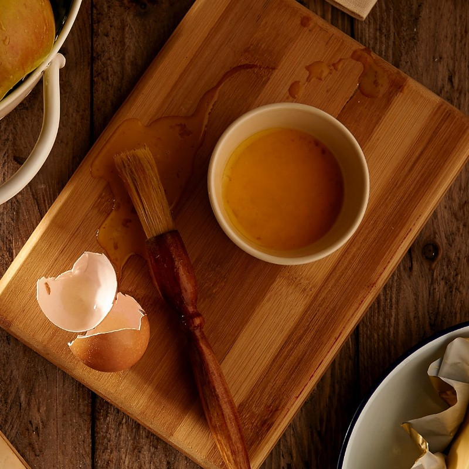

Food is an experience.

Food binds people together.

Food should be fun.

Food is a big part of our happiness.
I am a student at LCC International University in Klaipeda. I am studying Communications, but prior to this, I majored in Jazz singing. I always try not miss the opportunities to tutor languages, and help people to get to know my city. I love spending time with kids, therefore, most of my time I spend babysitting or volunteering at the local orphanage. You see... Nothing that could remind you about kitchen. So, let me ask the question - can everyone cook? Well... If I can - you can, too! Let's forget about diets today! We'll have them from Monday. Now we can dive into absolutely different world! I will take care that you would leave this page with inspiration, new ideas, and some educational information.
Food is an experience.
Food binds people together.
Food should be fun.
Food is a big part of our happiness.